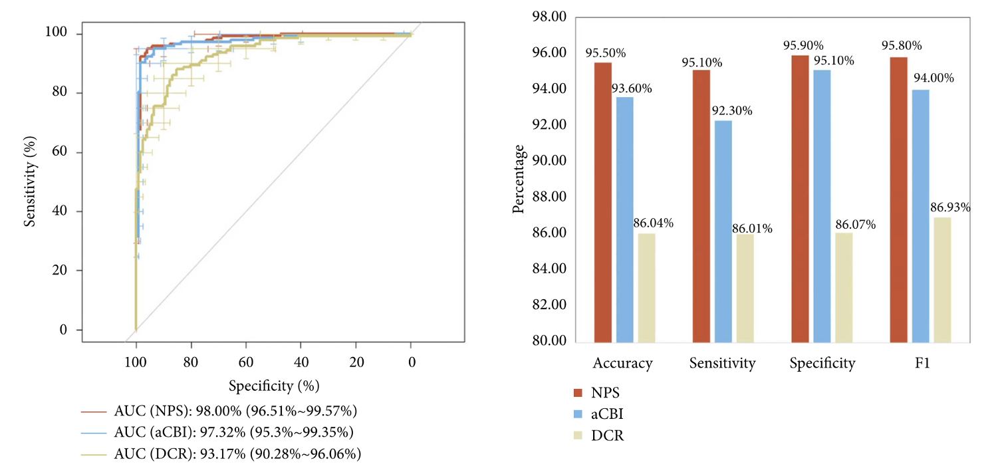

Dan Lin 林丹 Lam DaanPost doc at Cornell University
Email: dl862@cornell.edu |
 |
Biography
I am a postdoc at Cornell University under the supervision of Prof. Jessica McArt . Our work is committed to advancing Digital Animal Health, a proactive approach to animal healthcare that aims to promote their healthier lives before diseases manifest.
Education
- I got the Ph.D. in Bioinformatics at City University of Hong Kong under the supervision of Prof. Jun Li and Prof. Jessica McArt in Feb 2024.
- I got the Master of Science degree, M.S. in Biomedical Engineering at The Chinese University of Hong Kong in Aug 2019.
- I got the Bachelor of Science degree, B.S. (Honored) in Biomedical Engineering at Shenzhen University under the supervision of Prof. Yongjin Zhou in Jun 2018.
Research Interests
Digital animal health: AI-driven early prediction of health and production events in livestock, particularly dairy cows
Bioinformatics: Comparative genomics and metagenomics to study evolution and environmental adaptation in animals, especially honeybees
Gut microbiome: Diet- and drug-driven modulation of gut microbiota in mouse models
News
- [01/2023] Our paper "Transformer Neural Network to Predict and Interpret Pregnancy Loss from Activity Data in Holstein Dairy Cows" has been published.
- [09/2021] Our paper "Comparative Genomics Reveals Recent Adaptive Evolution in Himalayan Giant Honeybee Apis laboriosa" has been published.
- [09/2020] My undergraduate thesis project "Keratoconus Diagnosis: Validation of a Novel Parameter Set Derived from IOP-Matched Scenario" has been published.
Publications [Google Scholar]

|
Transformer Neural Network to Predict and Interpret Pregnancy Loss from Activity Data in Holstein Dairy Cows Dan Lin*, Ákos Kenéz, Jessica A.A. McArt, Jun Li [paper][code] |

|
Comparative Genomics Reveals Recent Adaptive Evolution in Himalayan Giant Honeybee Apis laboriosa Dan Lin*, Lan Lan*, Tingting Zheng, Peng Shi, Jinshan Xu, Jun Li [paper][supplemental files][code] |

|
Treatment with mixed probiotics induced enhanced and diversified modulation of the gut microbiome of healthy rats Qiuwen He*, Jiating Huang*, Tingting Zheng, Dan Lin, Heping Zhang, Jun Li, Zhihong Sun [paper] |
|  | Keratoconus Diagnosis: Validation of a Novel Parameter Set Derived from IOP-Matched Scenario Dan Lin*, Lei Tian, Shu Zhang, Like Wang, Ying Jie, Yongjin Zhou [paper] |

|
PRSNet : Part Relation and Selection Network for Bone Age Assessment Yuanfeng Ji, Hao Chen, Dan Lin, Xiaohua Wu, Di Lin [paper][code] |

|
Pre-impact Alarm System for Fall Detection Using MEMS Sensors and HMM-based SVM Classifier Shengyun Liang, Tianyue Chu, Dan Lin, Yunkun Ning, Huiqi Li, Guoru Zhao [paper] |
Teaching
CityUHK PH8001 (2024) - Guest Lecturer, Classroom, 'Experimental designs', 1h lecture for graduate students
CityUHK PH8001 (2024) - Guest Lecturer, Classroom, 'Regression models and machine learning models', 1h lecture for graduate students
CityUHK VM2100 (2024) - Guest Lecturer, Classroom, 'Confidence interval and sample size', 2h lecture for undergraduate students
CityUHK VM2100 (2024) - Guest Lecturer, Classroom, 'Study design and Literature review', 2h lecture for undergraduate students
CityUHK VM2100 (2022-2023) - Teaching Assistant, On-Line, 'How comparative genomics and statistical analysis reveal the evolution of Apis laboriosa', 20-min case study for undergraduate students
Experiences
Visiting PhD student, Cornell University, Feb 2023 – Jun 2023
Research Assistant, City University of Hong Kong, Jun 2019 – Aug 2019
Visiting undergraduate student, Chinese Academy of Sciences (ShenZhen), Jan 2017 – Nov 2017
Professional Memberships
American Dairy Science Association, 2023 – Present
American Society for Microbiology, 2025 – Present
Chinese Association of Animal Science and Veterinary Medicine, 2024 – Present
Chinese Association for Artificial Intelligence, 2024 – Present
Review Services
Preventive Veterinary Medicine (1), BMC Bioinformatics (1), Computers and Electronics in Agriculture (1)
Selected Honors and Awards
Institutional Research Tuition Scholarship, City University of Hong Kong, 2022
Dean's List Award, The Chinese University of Hong Kong, 2019
Distinguished Graduate, Shenzhen University, 2018
© Dan Lin | Last updated: Apr. 2025